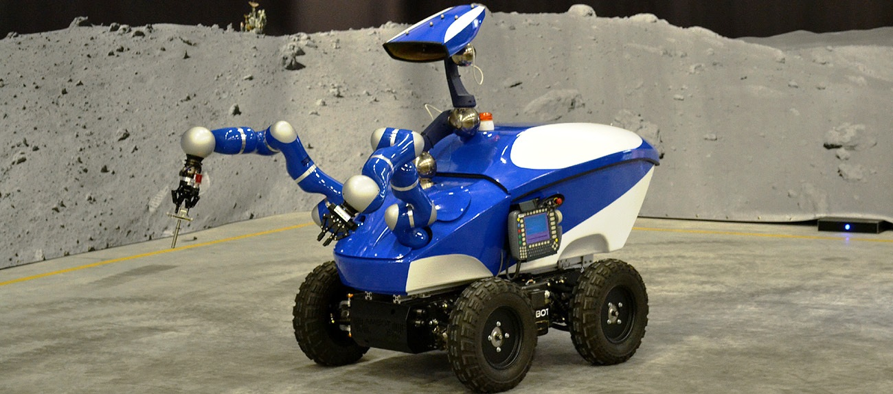
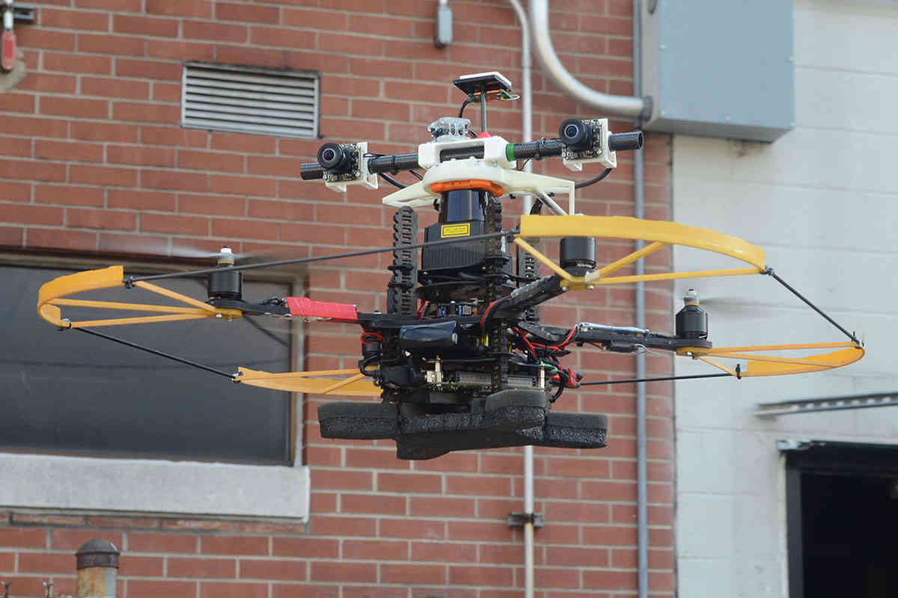

Дистанционные роботы для взятия проб
Наш робот будет брать пробу в разных местах для того, чтобы определить приближающуюся климатическую анамалию. По данным, полученым из интернета, можно сказать, что мы обладаем хорошим приемуществом при наводнении, - Северным Морским Путем. Так как благодаря пробам, полученным роботом, Россия сможет быстрее взять ситуацию в свои руки. И заранее знать, когда начнется таяние льдов.
Но есть и минус - там где раньше была вечная мерзлота, она закончится и вся инфраструктура разрушится .
Северный морской путь - кратчайший путь между Европейской частью России и Дальним Востоком; законодательством РФ определён как «исторически сложившаяся национальная единая транспортная коммуникация России в Арктике».
Как мы это риализуем?
На данный момент мы построили макет робота, установили на него аруку метку, благодаря которой камера узнает робота и в онлайн режиме рисует его путь. Также у нас есть иметация местности с не проходимыми зонами. Есть камера которая выступает в роле коптера. Она сканирует местность и выводит матрицу которая помогает роботу найти самый кратчайший и безопастный путь.

- Запрограмированный робот 
- Коптер для передачи информации 
Мы также будем передавать данные станции по своей внутренней связи. Сразу возникает воппрос - как это будет происходить? Всё просто, для передачи данных на станции будет два передатчика.
Первый - это коптер, который уехал с роботом, а второй - это коптер, который будет взлетать над станцией и принимать информацию. После этого передавать их специальному компьютеру, который, в следующую очередь, будет обрабатывать эти данные.
Сейчас вы можете посмотреть видео про машину, которая поможет брать пробу гораздо быстрее.
он отправит последние показания телеметрии коптеру, который потом отправит эти данные коптеру на главной станции. Следовательно, тот их отправит на обработку в командный пункт. Тем самым мы не будем использовать спутниковую связь.
Если реализовать этот проект, то мы сможем спасти большую часть мира от катастроф.